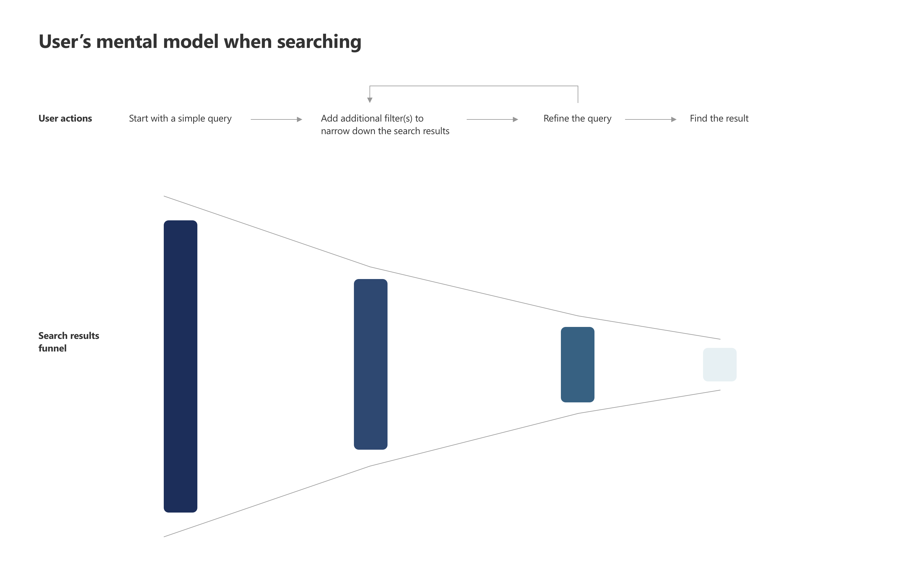
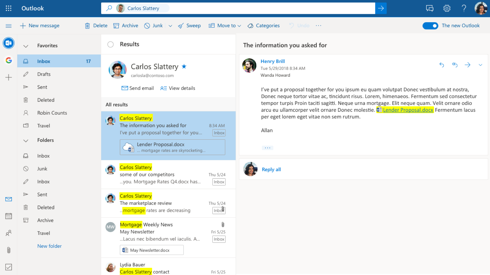
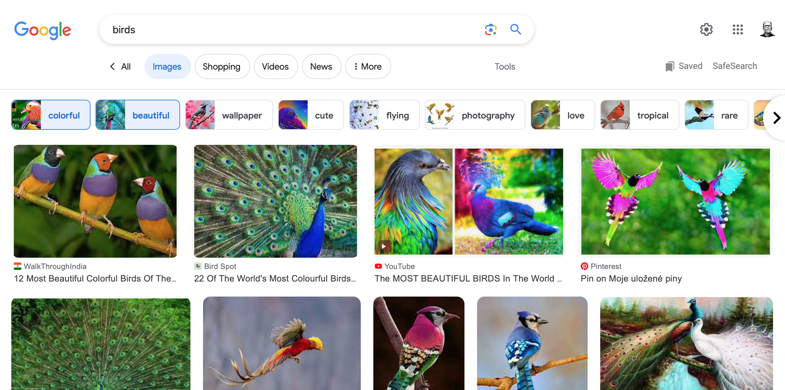

Outlook.com Search
- Role: Senior Product Manager
- Responsibilities: Feature incubation, feature design (with designers), and feature specing.
Outcomes:
- Advanced search and Interactive guided query formulation features used by 400 million users.
- Advanced search feature converted 1 enterprise customer from Gmail to Outlook.com
- Interactive guided query formulation feature increased Search Success Rate by 3.6%.
- Interactive guided query formulation feature reduced Time to Success by 2.2%.
- Interactive guided query formulation feature Increased Outlook.com search SUS by 12 points.
As the product owner of the Outlook.com search space, I had the opportunity to drive the development of critical search features that improved the user experience for millions of users. One of the accomplishments during my tenure was delivering the top customer asked feature: advanced search.
Advanced Search
The advanced search feature had a significant impact on the Outlook.com user base, and it even helped convert one enterprise customer to migrate from Gmail to Outlook.com. The enterprise customer was using Gmail and reluctant to move to Outlook.com because of the lack of advanced search feature. The speedy delivery of the advanced search feature in Outlook.com helped to convert one enterprise customer to migrate to Outlook.com during the time I was with the team.

Interactive Guided Search Query Formulation
Additionally, I incubated and led the development of an interactive guided search query formulation feature, in collaboration with Microsoft research. This feature allowed users to easily create complex search queries through a step-by-step process, making search more accessible to a broader audience.
Outlook.com's search users can be categorized into two groups based on their different behaviors. Users in the first group (approx. 90% of all search users) perform a simple search either based on a person's name or a keyword first and then refine the search query as needed. Users in the second group (approx. 10% of all search users) construct a more complex search query using a set of keywords such as "from:" and "to: " (E.G. from: jonathan@outlook.com). User reserach and telemetry data also revealed that about 70% of users in group one refine their search queries multiple times before they find what they are looking for. To do that, users need to constantly shift their attention between the search result list (bottom of the screen) and search box (top of the screen). Additionally, users need to switch back and forth between mouse and keyboard input.
Then, roughly 40% of the 30% users who don't refine their search query takes much longer time to find what they look for. I hypothesis that these users are either not aware that they can refine their search query or not know the right keyword(s) to refine their search.
The inspiration of interactive guided formulation came from literature review and my structured examination of patterns from other areas. The steped approach users take in image and video search seemed to be a possible solution to the user problems for the Outlook users.
With interactive guided formulation, users can simply click on the additional filters above the result list to refine their queries. This not only greatly reduced the amount of time wasted on input mode switching and attention shifting but also increased search success rate by increase awareness of additional filters.
Delivering interactive guided search query formulation was no easy feat. The engineering team had spent years building a feature call guided formulation; the design team was risk averse because of its desire to move to a unified search experience across Microsoft products; user research resource was very limited. just to name a few. However, I was able to build a multi-disciplinary team including HCI researcher from Microsoft Research, designer, and user researcher from the Compass program. I was able to test the initial concept within the Compass program. This initiative collected valuable positive feedback from users, which helped to build conviction in the team.


The release of these features had a significant impact on the Outlook.com search experience. The interactive guided query formulation feature, in particular, improved core search metrics - increased Search Success Rate by 3.6% and reduced Time to Success by 2.2%. As a result, this feature was later adopted by Outlook for Mac. Soon after the Outlook experimentation ran, a similar feature appeared in Gmail.


Overall, my experience leading the Outlook.com search innovation highlights my skills in product management, strategic thinking, collaboration with cross-functional teams, and driving innovation. I am proud to have delivered critical features that improved the user experience and drove positive business outcomes. I look forward to taking on new challenges and opportunities to create innovative products that meet the needs of users.